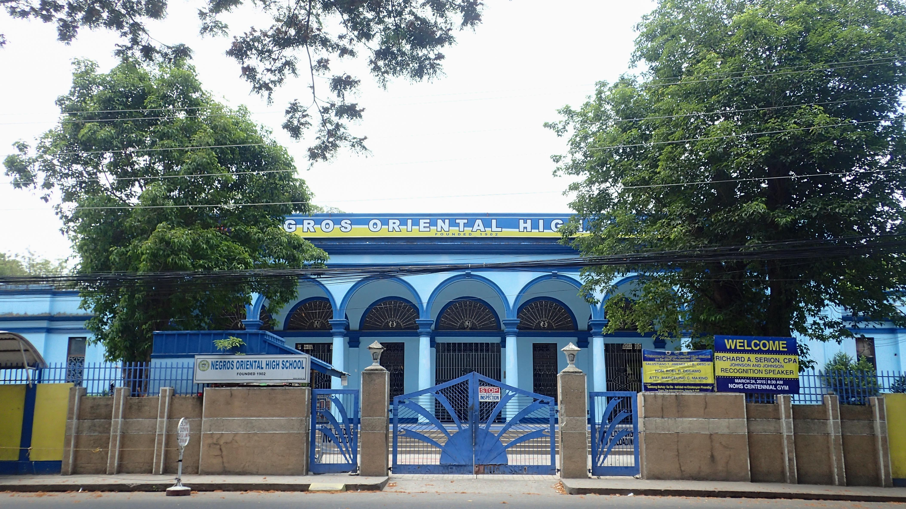

The Place We Call School
My school is Negros Oriental High School. It's where I spend most of my school days learning new things, meeting people, and making memories with my classmates. Like any other school, we have our own challenges, but we also have moments that make school life fun and memorable.
Our School
More than just a place for learning, our school is a community where friendships are built, talents are discovered, and meaningful memories are created. Every school day gives us new opportunities to learn something valuable and become better versions of ourselves.

School Video
Every hallway, classroom, and shared moment tells a story of student life. This video gives us a glimpse of the experiences and memories that make our school days meaningful.
School Audio
Listen to the school hymn and appreciate another part of our school community.
Our Pride, Our Future
School isn't always easy, and not every day is exciting, but there's always something to learn from the experiences we have here. For me, being a student at Negros Oriental High School is part of my journey, and I'm glad to have memories that I'll look back on someday.
Negros Oriental High School — True blue and ever loyal!